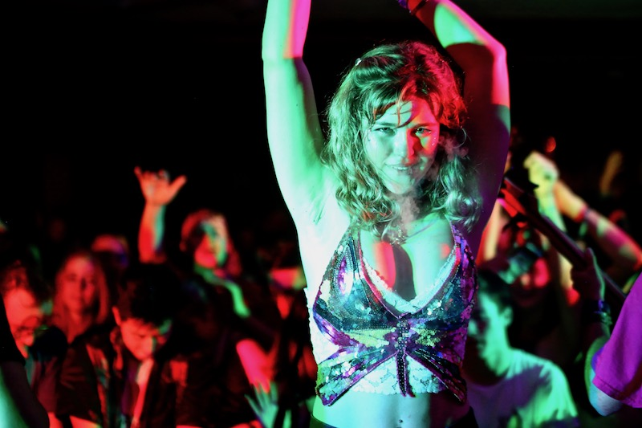
 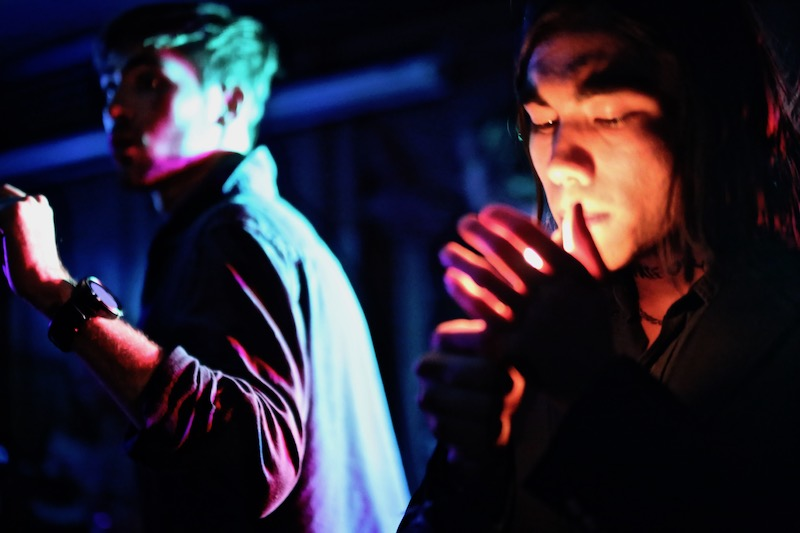
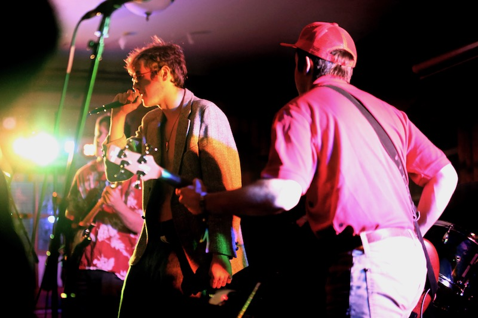
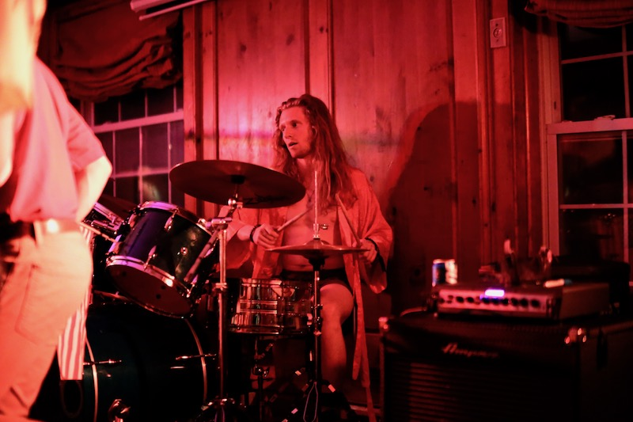
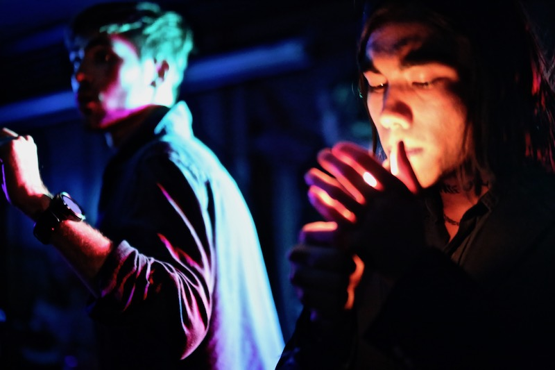
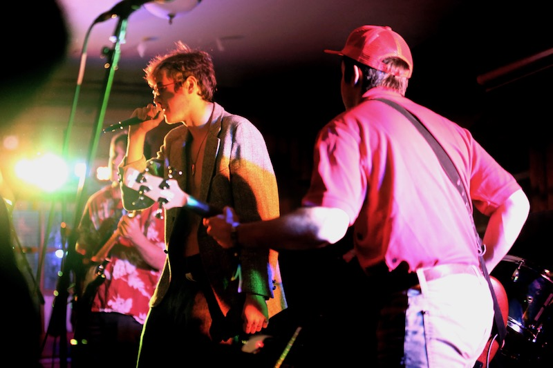
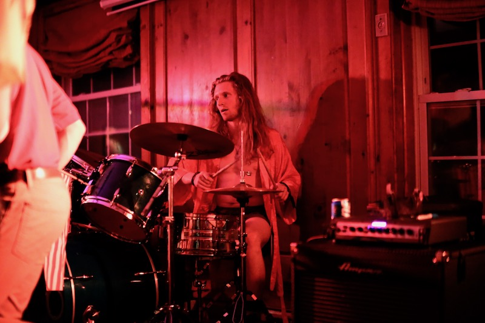
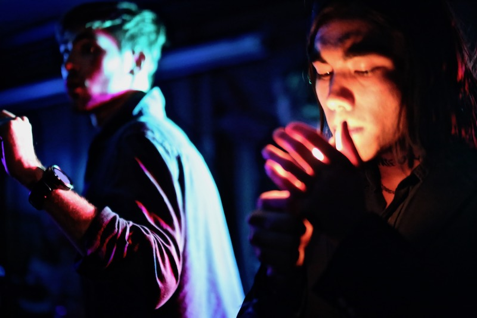
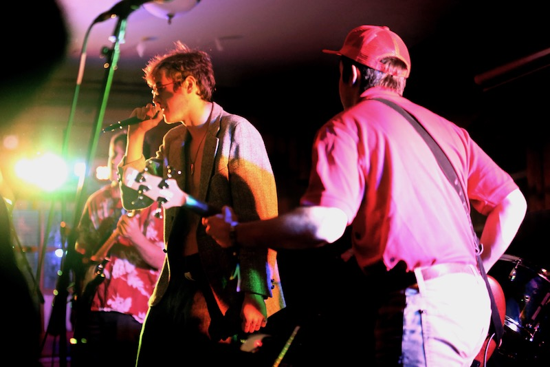
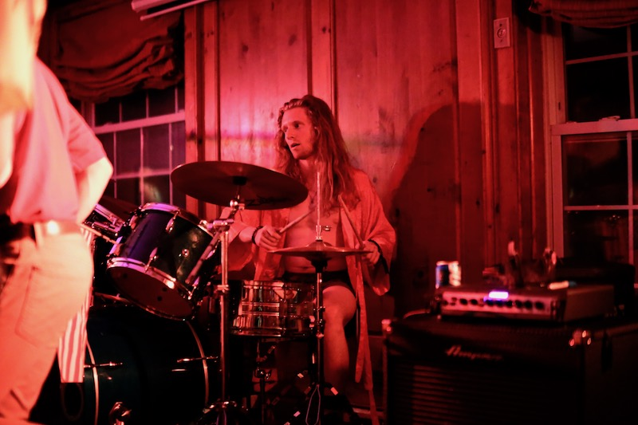
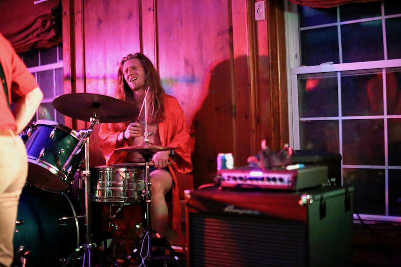
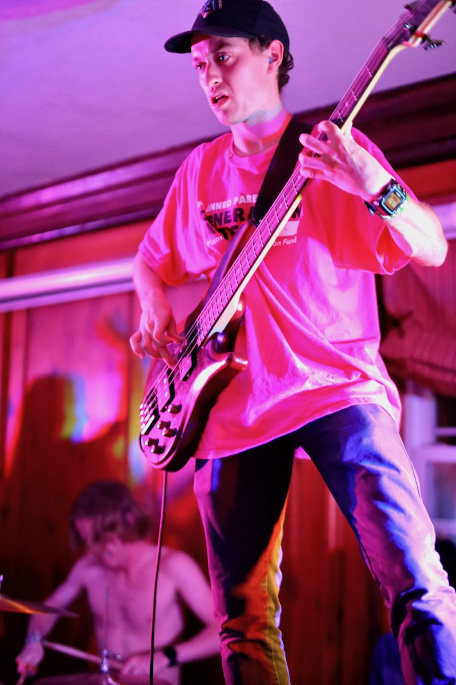
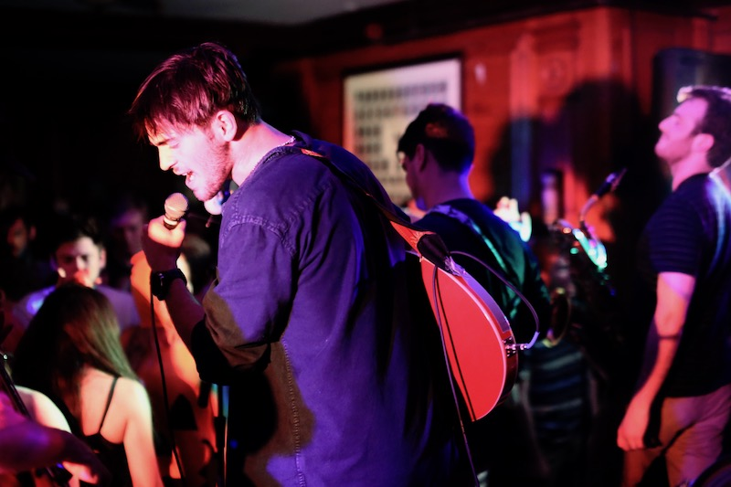
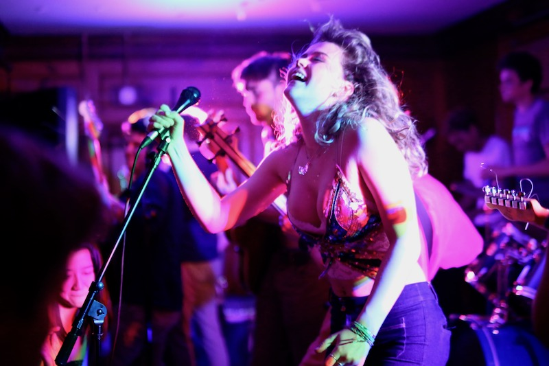
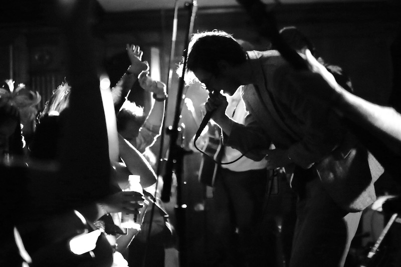
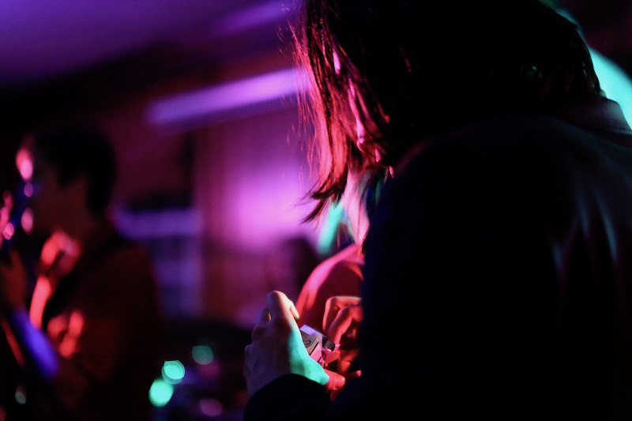
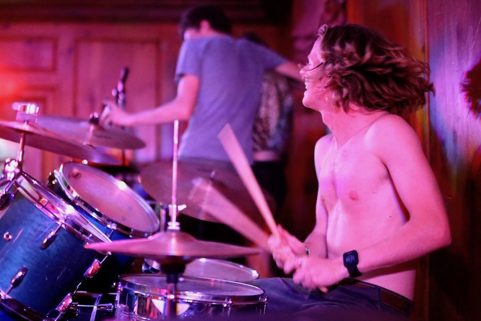
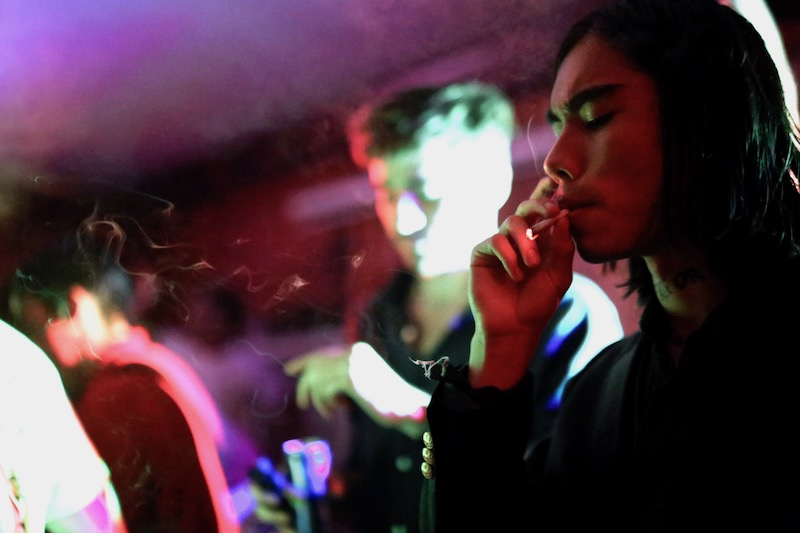
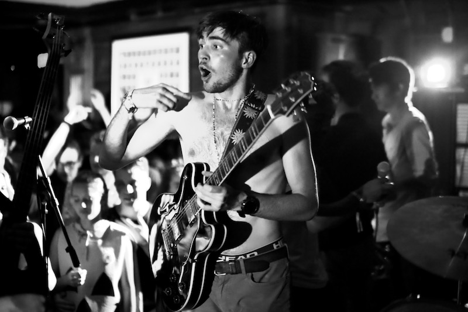
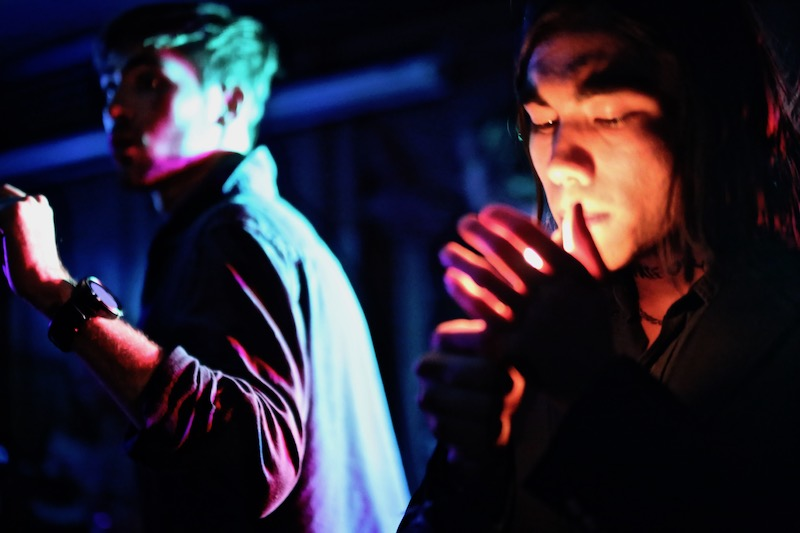
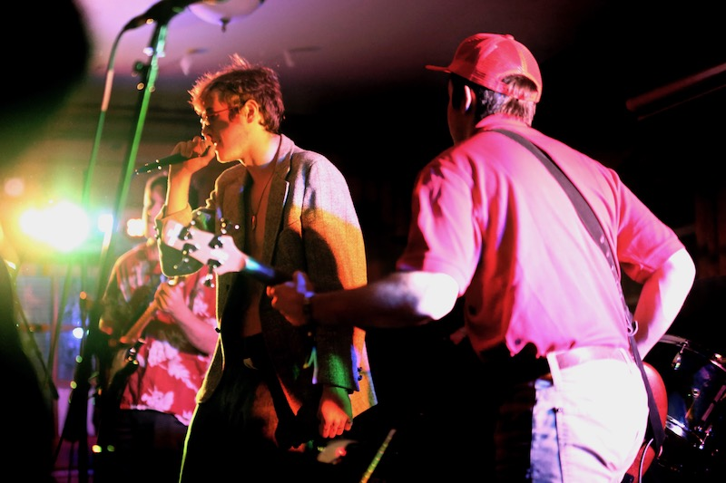
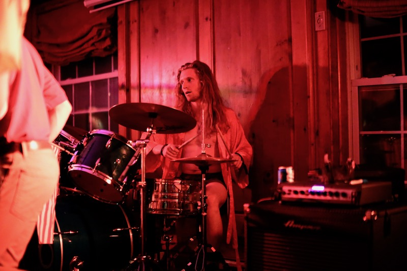
I only shot one Read Receipts show last year but it was one of my favorites shoots because of the crazy technicolor lighing! I love the colors in these photos, they remind me of 80s neon like the Starcourt mall in the new season of Stanger Things. This show was right at the end of term as well, so the crowd and the band were having a blast celebrating the start of summer.